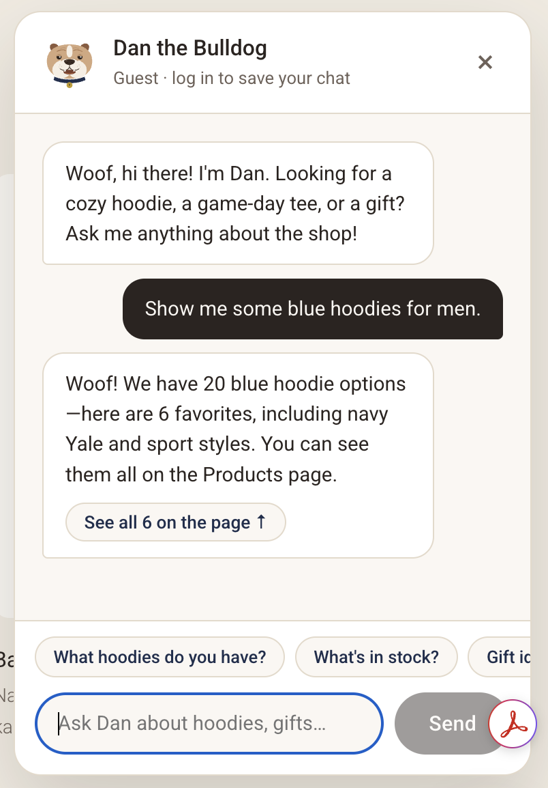
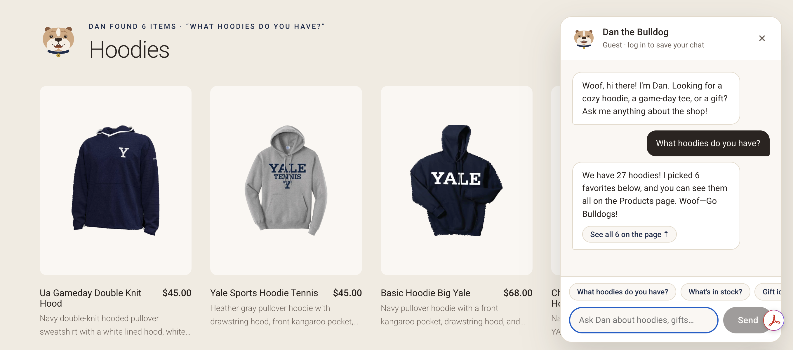
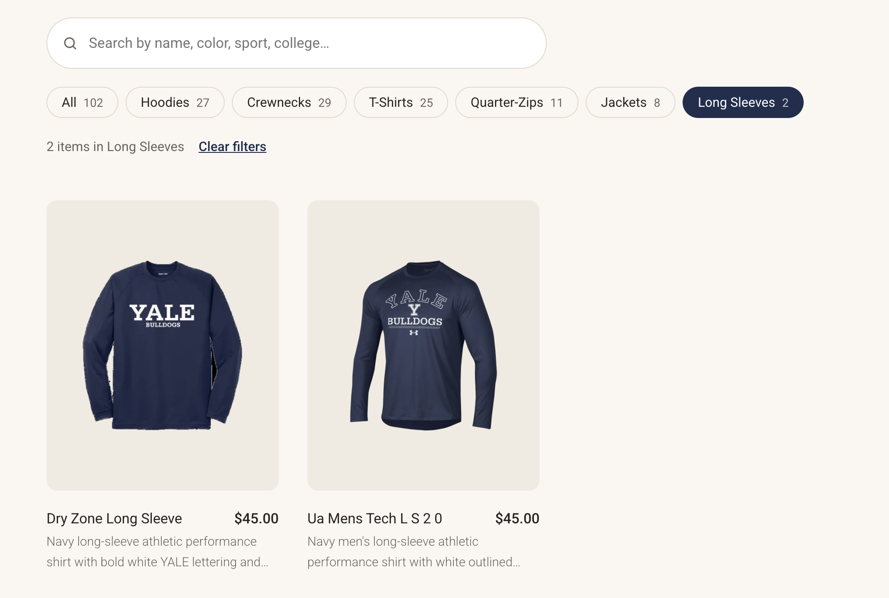

Campus Customs: App Check
Screenshots from testing the running site (React + Vite front end, FastAPI + PydanticAI backend, data from campus_customs.db). Click any screenshot to open it full size.
1. The chat runs a real product search
app_check_images/inventory.png

Proves: Dan answers from the database, not from memory. He searched the catalogue, reported 20 blue hoodie options (the same count the catalogue search returns), and put 6 of them on the page as cards (“See all 6 on the page”), with a pointer to the full list on the Products page.
2. Asking about hoodies makes product cards appear on the page
app_check_images/search_cards.png

Proves: the agent returns its results in a structured format, and the website turns them into clickable product cards on the page (photo, name, price, short description): “Dan found 6 items · Hoodies”. Dan's reply says the shop has 27 hoodies, which matches the database, and shows 6 picks, the card limit from Problem 9.
3. Problem 9 improvement: search bar and category filter on the Products page
app_check_images/usability.png

Proves: shoppers can narrow the 102 products in one click. Choosing Long Sleeves filters the page to exactly 2 items (Dry Zone Long Sleeve and Ua Mens Tech L S 2 0, both $45), with live counts on every category (Hoodies 27, Crewnecks 29, T-Shirts 25…) and a “Clear filters” link.